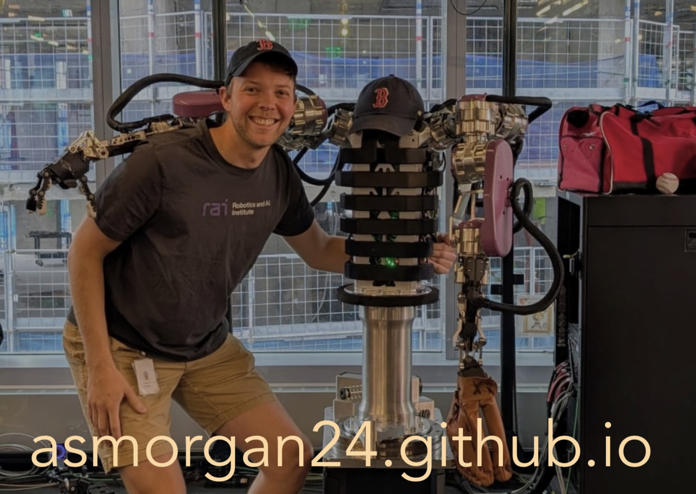
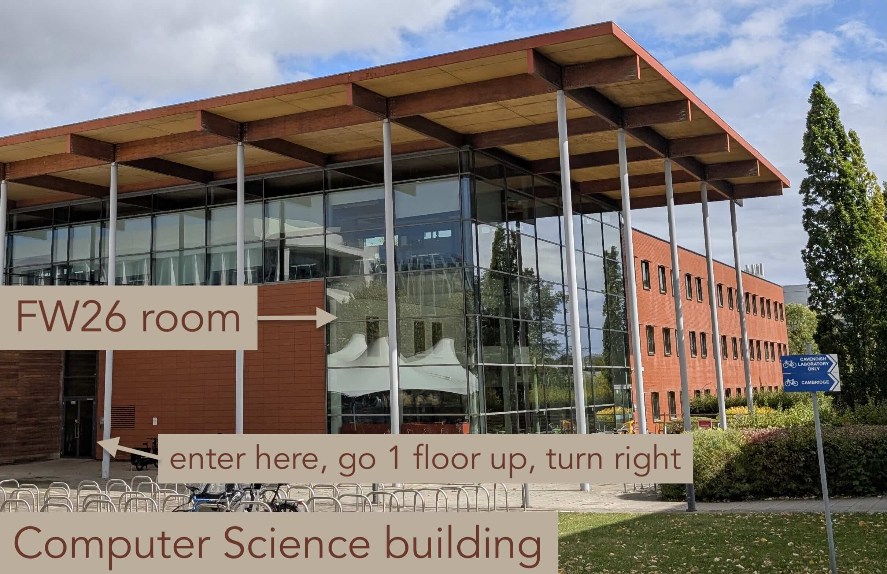

Abstract: AthenaZero is a bimanual manipulator designed to maximize control authority while minimizing inertia. By utilizing quasi-direct drive actuation and transmission remotization techniques, the system achieves an effective endpoint mass comparable to that of a human. Trading off trajectory tracking stiffness as compared to conventional high-impedance manipulators, this architecture reduces reflected inertia by an order of magnitude. This characteristic, coupled with high control authority due to our actuator design, makes AthenaZero exceptionally well-suited for dynamic manipulation, particularly in its ability to accelerate over a wide range of joint velocities. We describe the methodology that led to this design and demonstrate its capabilities on three baseball-inspired tasks: throwing, catching, and batting, which showcase complex interactions on human-comparable timescales where milliseconds matter. Our robot was capable of throwing at speeds in excess of 30 m/s, while catching and batting at speeds in excess of 14 m/s over a short 7.3 m distance.
Bio: Andrew (Andy) Morgan is a Research Scientist at The Robotics & AI Institute in Cambridge, MA. He obtained his PhD from Yale University's GRAB Lab under the supervision of Prof. Aaron Dollar in March of 2023. In this adventure, he was the recipient of the NSF GRFP and the RSS: Pioneers awards. His research mainly focuses on planning, control, and design for robot hands, typically for the use-case of robot in-hand manipulation. During his PhD, he also spent time at Amazon Robotics AI and TU Darmstadt working with Prof. Jan Peters. At RAI, he focuses on the design and control of low-impedance, high-torque manipulators for pushing towards dynamic contact interactions with robots. For more information, visit his website: https://asmorgan24.github.io
Location: Room FW26, William Gates Building, West Cambridge

Note: If you are lost, you can go to the reception that is to the left of the entrance shown in the photo.